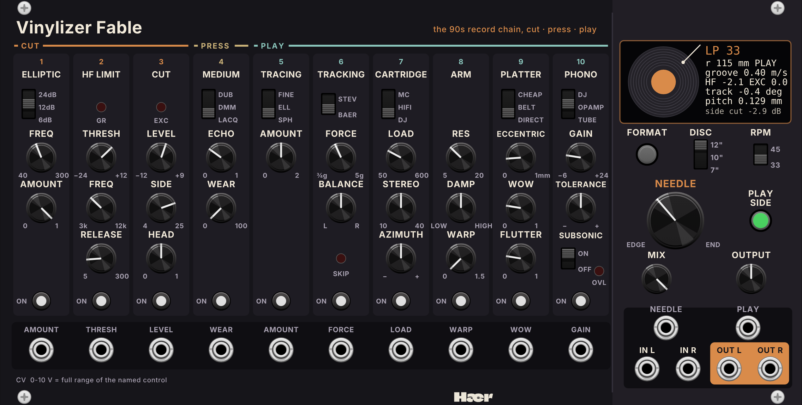

One 50 HP VCV Rack module that puts audio through the whole chain of a 1990s record, modelled from the physics of cutting, pressing and playing a groove. There is no crackle, no pops and no hiss: everything you hear comes from what the medium does to the signal.

A record is cut with the RIAA recording curve: bass turned down by about 20 dB, treble turned up by about 20 dB. The phono preamp does the exact opposite. Vinylizer Fable always runs this pair, so with every process switched off the module is flat. Everything in between (the cutter, the groove, the stylus, the cartridge, the preamp input) works on the pre-emphasised signal, with its treble boosted. That is the secret of the vinyl sound: distortion in the middle of the chain falls mostly on the top end, and the playback curve then pushes it back down, so it turns into softness and density instead of grit.
Signal order: ELLIPTIC → record curve and cut level → CUT excursion limit → HF LIMIT → CUT head → MEDIUM → PLATTER (the groove is read) → TRACKING and TRACING (run at 4x the sample rate, in real micrometres of groove wall) → CARTRIDGE → ARM → PHONO.
| Control | What it does |
|---|---|
| Display | The disc from above with the stylus on it, the format, the groove radius, groove speed, HF limiter and excursion gain reduction, tracking angle error, groove pitch, and how much the side length forced the cut level down. |
| FORMAT | Steps through presets: 7" 45 (4 min side, +3 dB), 12" 45 club single (7 min, +6 dB), EP 33 (12 min, +3 dB), LP 33 (20 min, 0 dB), DUB PLATE (10" 45 acetate, 6 min, +6 dB). Sets DISC, RPM, SIDE, LEVEL and MEDIUM, and puts the needle at the edge. Change anything afterwards and the display says CUSTOM. Also in the right-click menu. |
| DISC, RPM | 7", 10" or 12", and 33 or 45 rpm. They set the outer and inner radius of the music and how fast the groove passes the stylus. |
| NEEDLE | Where the stylus is, from the edge to the end of the music. Near the end the groove moves slowly (about 0.21 m/s on an LP versus 0.51 m/s at the edge), so the same treble is packed into a shorter length of groove: that is inner groove distortion. Note that the end of the music depends on SIDE: a short 12" ends far from the label and never gets that bad. NEEDLE CV: 0-10 V adds to the knob. |
| PLAY SIDE | Press (or trigger the PLAY jack) and the needle travels across the side in real time, over SIDE minutes, so a long patch slowly gets thicker towards the end, like the last track on side B. Press again to stop. Right-click: loop back to the edge at the end. |
| MIX, OUTPUT | Dry/wet (the dry is delayed to line up with the wet, so in-between settings don't comb filter) and output level. |
| IN L / IN R, OUT L / OUT R | Stereo. A mono input on IN L feeds both sides. |
Each of the ten processes has an ON button (lit = on) so you can hear what it adds, and a CV jack under it for its main control (the name is printed over the jack). 0 to 10 V sweeps the whole range of that control on top of the knob; negative voltages pull it down.
Out-of-phase bass makes the cutter move up and down. Too much and it lifts out of the lacquer or digs through it, so mastering engineers folded the bass to mono with an "elliptical equaliser". This one fades the side (L−R) signal below FREQ (40-300 Hz). AMOUNT is how much of the side is removed, the switch picks a 6, 12 or 24 dB/oct slope. Stereo bass synths and reverb tails collapse to the centre and the low end gets solid.
High frequencies need enormous cutter acceleration and can burn out the cutter head coils, so a fast limiter sat in front of the lathe. It looks at the acceleration of the treble band (above FREQ, 3-12 kHz) after the record curve, not its level, so sharp hats and sibilance get pulled down while steady highs mostly pass. THRESH sets where it starts, RELEASE how fast it lets go. The GR light shows it working. A lot of the "records sound smooth on top" feeling comes from here.
LEVEL (−12 to +9 dB) is how hot the groove is cut. SIDE (4-25 minutes) is how much music has to fit. The module works out the groove pitch the engineer would need; long sides get narrower grooves, which means a lower cut level (shown on the display as side cut), a higher bass high-pass (up to 60 Hz on very long sides) and a tighter excursion limiter, which turns the bass down whenever the groove wall would swing further than about half the space between grooves (EXC light). Short 12" singles sound big and loud; a 25-minute LP side sounds smaller and politer, which is exactly why DJs bought 12"s. HEAD goes from a clean modern cutter to an older one: earlier treble roll-off with a slight peak, coil heating that slowly squashes the level when there is a lot of treble, and a softer drive amplifier that saturates sooner.
LACQ: a normal pressing; three plating generations soften the very top. DMM: direct metal mastering, cut into copper; tighter and brighter, with very little groove echo. DUB: a soft acetate dub plate played directly. ECHO is the faint copy of the music one turn of the record away, printed through the thin wall between neighbouring grooves (louder when the grooves are closer, so long sides have more). By default it is post-echo, because a live module can't see the future; right-click True pre-echo delays the whole output by one turn (1.8 s at 33, 1.3 s at 45) and gives you the real pre-echo before every loud entry. WEAR (0-100 plays) takes off top end and rounds off treble peaks. Pressed vinyl barely changes; a dub plate is dull after 30-40 plays, just like the real thing.
The groove is cut by a sharp chisel but read by a rounded tip, which can't get into tight curves. The module rolls a circle of the real tip radius along the groove wall, in micrometres, at 4x the sample rate, so the distortion is the geometry itself: mostly 2nd harmonic, growing with level, treble and closeness to the label. SPH (0.7 mil spherical, the DJ standard), ELL (elliptical), FINE (fine line) set the radius; smaller tips trace better. AMOUNT scales the effect (1 = real, 2 = exaggerated). A small treble loss from the contact patch follows the groove speed too.
A nice physical detail: for a mono signal the tracing distortion comes out on the vertical axis, which a stereo cartridge reads as L−R. Sum the output to mono and much of it cancels, which is why mono records always sounded cleaner on the inner tracks.
A pivoted arm meets the groove at a slightly wrong angle across most of the side (zero at two null points set by BAER/STEV alignment). That shifts the reading point as the groove swings and adds some more 2nd harmonic. The display shows the angle. The stylus is only held against each groove wall by the tracking FORCE (0.75-5 g). When the wall drops away faster than that force can accelerate the stylus, it leaves the wall and lands again: the buzzy breakup on loud sibilance and hot treble. The SKIP light shows it. BALANCE is skating force: off centre, one wall gets less force and that channel breaks up first. Light forces, hot cuts, elliptical tips and hi-fi cartridges (lighter tip mass) make it easier to hear.
A moving magnet cartridge is a coil with real inductance. With the cable and preamp capacitance (LOAD, 50-600 pF) it forms a resonant filter: a peak in the top octave, then a fall. More capacitance pulls the peak down and darkens it, exactly as a long cable does. DJ is a high-output DJ cartridge (more inductance, heavier tip, a lower mechanical resonance), HIFI a home moving magnet, MC a moving coil (no inductance effect, a small lift at the very top; LOAD does nothing). STEREO is channel separation (10-40 dB), which gets worse in the treble. AZIMUTH tilts the stylus so one channel leaks more than the other.
The arm's mass and the cartridge's springiness resonate at RES (5-20 Hz). Below it the arm follows the groove and nothing is heard; around it there is a bump. DAMP sets how sharp the bump is. WARP (0-1.5 mm) bends the record once per turn, making slow vertical movement around the resonance (the woofer pumping you see on a warped record) and a little wow, because the stylus tilts forward and back as it rides the warp.
ECCENTRIC is how far off centre the hole was punched (0-1 mm). The groove speed then rises and falls once per turn, by more near the label because the same offset is a bigger part of a smaller circle: the classic slow "seasick" wobble of a cheap pressing. WOW and FLUTTER are the motor and drive: DIRECT drive is very steady (a slight once-per-turn servo movement), BELT wanders slowly with belt stretch, CHEAP is a portable deck. There is no pitch fader: a live module can't play its input faster than it arrives.
Applies the RIAA playback curve after an input stage that can overload, because the input sees the treble-boosted signal. TUBE: soft, asymmetric saturation and a little 2nd harmonic. OPAMP: clean until it hits the rails. DJ: a 90s club mixer phono input, with less headroom and a curve that is slightly bass-heavy and dull on top. GAIN drives the input (level-matched afterwards), the OVL light shows overload. TOLERANCE shifts the curve's corner frequencies the way 5% parts do, tilting the bass up or down by a dB or two. SUBSONIC is a 18 Hz high-pass that removes warp rumble.
Internally 1.0 is a groove velocity of 5 cm/s at 0 dB cut level, which is what a 5 V peak at the input becomes. All radii, speeds, tip sizes, tracking forces and capacitances are real-world values, chosen from typical 1990s equipment. The module adds about 13 ms of delay (12 ms of it is the room the platter needs to wobble), or one turn more with true pre-echo. It runs the stylus section at 4x the sample rate at 44.1/48 kHz, 2x at 88.2/96 kHz.